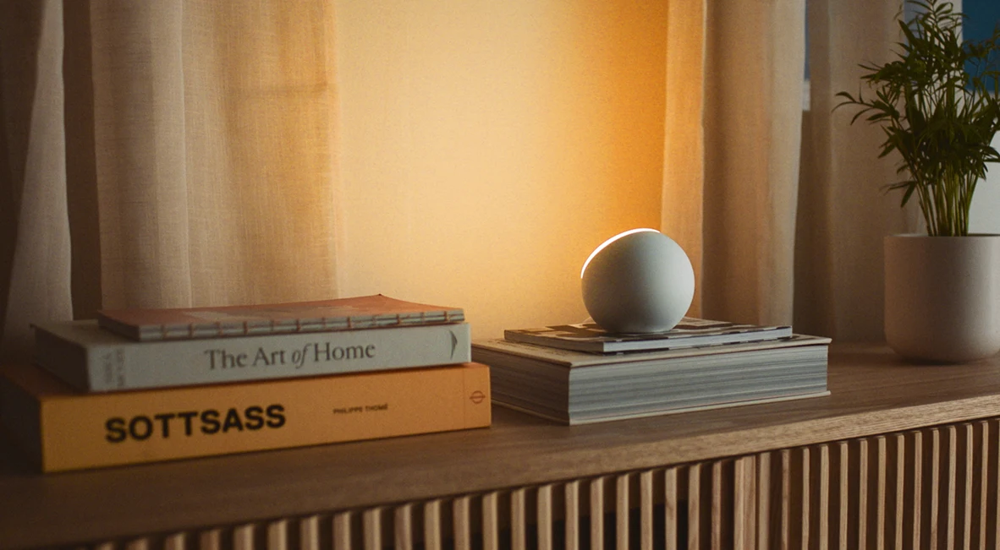
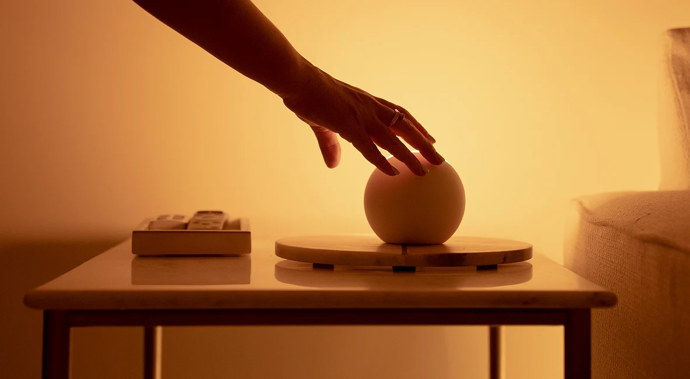
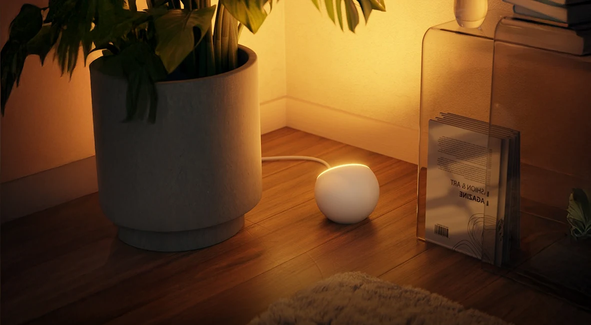

Level 0195%
Local power
Both lights repeatedly respond together or individually over the recovered Mesh control path.
An unofficial open-source field guide
Oasis Ambient 2 looks effortless. Underneath is a layered system of Bluetooth Mesh, RainMaker cloud state, room groups, and device-resident schedules. We mapped it, built a native Mac controller, and documented where the evidence ends.

The actual hardware
Oasis Ambients are wall-facing, indirect lights. Their sculptural form is central to the product—and to recognizing whether this field guide covers the lights you own.


Product images are reproduced from the official Oasis Ambients page for product identification and provenance. Oasis retains ownership of its photography and trademarks.
The investigation
The official app still works. This project adds a compatible control surface and a public record of what we learned—without resetting, removing, or reprovisioning the lights.
Nine deep dives
FCC internals, ESP32-C6, the five-channel LED driver, secure boot, local storage, manufacturing variants, and what the silicon does—and does not—say about Matter.
Open the light → 01How the Oasis app, BLE Mesh, ESP local control, RainMaker, rooms, and the lights fit together.
Open the system map → 02The vendor model, services, opcodes, byte layouts, and the commands deliberately left out.
Read the command map → 03Six official whites, RGB mode, the native picker, and the effect controls still under investigation.
Enter the light lab → 04The device-resident schedule schema behind Light Cycle, sunrise, sunset, fades, and room programs.
Decode the schedule → 05A visible SwiftUI controller paired with a removable, automatically launched headless bridge.
See the Mac design → 06Why Matter was a dead end on these units and how the bridge exposes a safe local control surface.
Follow the integration → 07A candid ledger of what is live-validated, statically decoded, inferred, protected, or still unknown. No mystery bytes presented as fact.
Inspect the evidence → 08The public trail behind Oasis: product leadership, FCC responsibility, an Espressif provisioning fork, current R&D leadership, and the gaps that remain in public attribution.
Follow the public trail →Levels of ownership
“Working” is not a single state. Each layer earns its own confidence level.
Both lights repeatedly respond together or individually over the recovered Mesh control path.
Brightness, Kelvin, presets, timestamps, and combined temperature-plus-brightness are decoded and tested.
RGB transmission and mode selection are understood; incoming state and device gamut remain incomplete.
The full schedule schema is mapped, but public editing remains gated on careful compatibility validation.
Method
Use the official app and record what a real control does, including timing and transport behavior.
Follow the client from UI intent through its native bridge, command serializer, and network layer.
Compare static code, protected account state, and live device response. Redact private identifiers.
Expose only the smallest safe command surface, then preserve known payloads with regression tests.
Keep the official Oasis app useful. The bridge does not reset devices, replace room membership, or claim authority over schedule data it cannot safely round-trip.